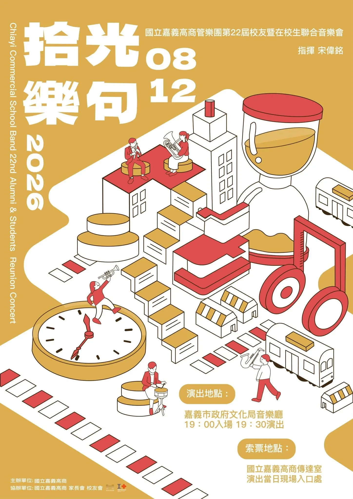

音樂傳承震撼人心 跨世代合奏交織燦爛樂句
嘉義地區的管樂愛好者們注意了！音樂帶來的感動持續縈繞在大家心中。國立嘉義高級商業職業學校管樂團這次帶來的第22屆校友暨在校生聯合音樂會拾光樂句，展現了樂團一路走來的傳承與活力。校友與在校生們齊聚一堂，用對音樂的無比熱情交織出最動人的樂章。這樣的跨世代合作不僅展現了社團強大的凝聚力，更讓所有到場的觀眾感受到樂團蓬勃發展的強大氣勢與音樂躍動！
多元編制精彩呈現 打造極致音樂饗宴
這次音樂會呈現的節目內容非常豐富多元，讓人深刻體會到管樂藝術的無限魅力。演出包含了聲勢浩大的管樂合奏，展現極佳的默契與層次感；還有極具技巧與細膩情感的豎笛重奏，以及充滿節奏感與震撼力的打擊重奏。多種演奏形式互相輝映，展現了音樂的多樣性與熱情渲染力，樂團成員們傾盡全力呈獻精彩表演，將平日積累的訓練成果完美展現給每一位聽眾。
演出資訊完整記錄 重溫精彩活動細節
為了讓關心這場音樂會的朋友們能清楚了解活動細節，以下為本場盛會的完整紀錄資訊。活動名稱為國立嘉義高商管樂團第22屆校友暨在校生聯合音樂會拾光樂句，演出時間為2026年8月12日晚上19點30分，地點位於嘉義市政府文化局音樂廳。本場次由國立嘉義高級商業職業學校管樂團的校友暨在校生共同演出，節目內容包含管樂合奏、豎笛重奏與打擊重奏，並採取免費索票入場的方式，讓廣大民眾都能共同體驗優美的音樂世界。
持續關注管樂動態 一起分享音樂熱情
看完這次精彩的音樂會紀錄，是不是也讓大家感到無比熱血與感動呢？管樂文化在嘉義深耕茁壯，各校樂團的優秀表現都非常值得我們持續關注與支持。歡迎大家將這篇充滿音樂熱情的文章分享給身邊所有喜愛管樂的朋友們，讓我們一起關注嘉義在地管樂的最新動態，為堅持音樂夢想的青年學子與校友們加油打氣，共同期待未來更多精彩的藝文活動！